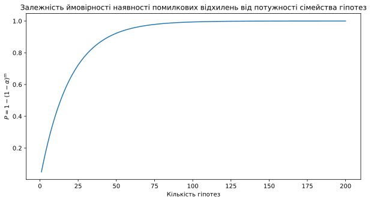
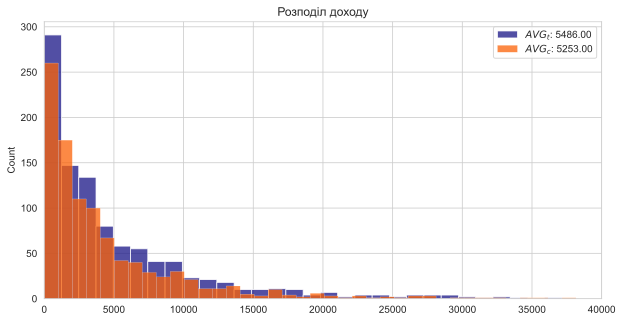
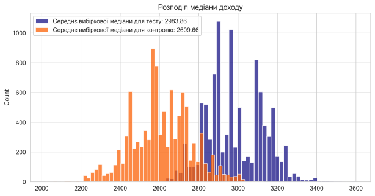
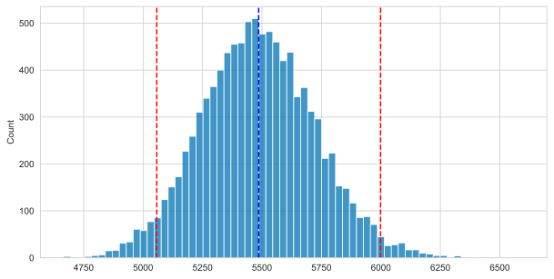
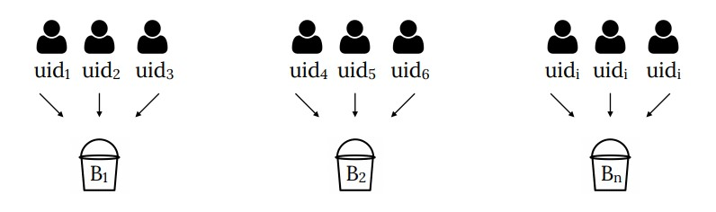
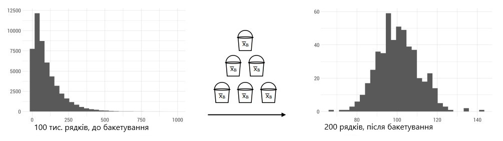
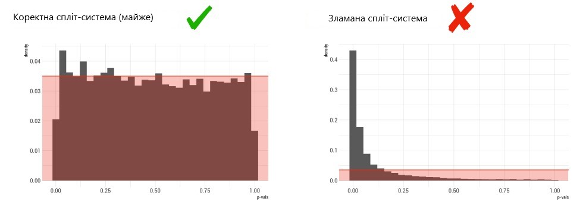

Множинна перевірка гіпотез + Бустреп + Бакетування + АА
Прикладна аналітика при розробці IT
Ігор Мірошниченко
КНУ імені Тараса Шевченка, ФІТ
Як перевіряються гіпотези?
Аналітику Артуру дісталися в руки нові результати A/B-тесту. Менеджер Святослав тестував вплив промо-пушів додатка доставки піци. Він виділив три когорти користувачів: перша - контроль, другій відправив пуш на знижку 30%, третій відправив пуш на безкоштовну піцу до 35 см до замовлення від двох піц.
Контроль
-30%
2+1
Питання, хто на 3 місяць принесе більше грошей?
Проблема 1
Рівень False Positive зростає пропорційно \(1-(1-\alpha)^m\)
де \(\alpha\) - рівень значущості, \(m\) - кількість гіпотез
Якщо коротко, проблема полягає в тому, що під час одночасної перевірки великої кількості гіпотез на тому самому наборі даних ймовірність зробити неправильний висновок щодо хоча б однієї з цих гіпотез значно перевищує початково прийнятий рівень значущості.
Контроль
-30%
2+1
Якщо зробити \(N\) тестів, то ймовірність припуститися хоча б однієї помилки I роду в групі тестів (family-wise error rate, FWER) значно зростає згідно з формулою
\[1 - (1 - \alpha)^m\]
де \(\alpha\) - рівень значущості, \(m\) - кількість гіпотез.
У випадку з 3 когортами у нас 3 попарних рівняння, тобто ми перевіряємо 3 гіпотези: A/B, A/C, B/C. Це означає, що за рівня значущості 95%, \(\alpha\) буде
\[1 - (1 - 0.05)^3 = 0.142\]
Ймовірність того, що тест не помилиться дорівнює
\[0.95^{41} = 0.12\]
Або, якщо він помилиться хоча б 1 раз
\[1 - 0.95^{41} = 0.88\]
Можна задерти рівень значущості, і за 10 гіпотез можна отримати такі результати (за різних альфа):
\[ 95\% = 1 - (1 - 0.05)^{10} = 0.401 \\ 99\% = 1 - (1 - 0.01)^{10} = 0.095 \\ 99.5\% = 1 - (1 - 0.005)^{10} = 0.095 \\ 99.9\% = 1 - (1 - 0.001)^{10} = 0.01 \]
Тобто для \(\alpha = 0.05\) ми отримаємо 40% помилку, а зовсім не 5%, як від початку задається параметром
Проблема 2
Що більше гіпотез перевіряється в один момент, то складніше проінтерпретувати дані
«У вас є мобільна версія і десктопна, 50 країн, приблизно 20 значущих джерел реферрального трафіку (пошук Google, партнерські посилання тощо). Усього виходить \(2 \times 50 \times 20 = 2000\) сегментів. Припустимо, що кожен сегмент ідентичний кожному іншому сегменту. Якщо сегментувати дані, вийде \(0,05 \times 2000 = 100\) статистично значущих результатів чисто випадково. Так збіглося, що користувачі Android з Кентуккі, перенаправлені Google, користувачі iPhone, перенаправлені jzyQvfh8z, і користувачі, які зайшли через ПК у Нью-Джерсі, вибрали редизайн. Дивовижно!»
Найпростіший, але найжорсткіший спосіб корекції множинних рівнянь — Поправка Бонферонні. Знаючи кількість тестів, можна обчислити скоригований рівень значущості і використовувати його
\[\alpha_{\text{скор.}} = \frac{\alpha}{m}\]
Наприклад, щоб зберегти в групі з 10 тестів ймовірність помилки I роду 0.05, потрібно проводити кожен тест за \(\alpha = 0.005\).
При цьому різко зростає ймовірність не знайти відмінностей там, де вони є.
Для випадків, коли нам важливіше зберегти істинно-позитивні результати, ніж не допустити хибнопозитивних — використовується контроль False Discovery Rate:
FP / (FP + TP)
За допомогою FDR ми задаємо не кількість помилок першого роду в принципі, а кількість хибнопозитивних (fp) результатів відносно до істиннопозитивних (tp) і хибнопозитивних (fp) (далі це число позначається як \(\gamma\)).
Для контролю FDR використовується поправка Бенджаміні-Хохберга
Навіщо розраховувати всі ці ймовірності?
flowchart TB
A["`1000 A/B-тестів`"] --> |"`30% тестів мають
дати ефект        30%`"| B["`Є ефект
у 300`"]
A --> |"`70%`"| C["`Не має ефекту
у 700`"]
B --> |"`power = 35%      35%`"| D["`105 тестів
виявили
ефект (TP)`"]
B --> |"`65%`"| E["`195 тестів
не виявили
ефект (FN)`"]
C --> |"`95%`"| F["`665 тестів не
значущі (TN)`"]
C --> |"`5%         α = 5%`"| G["`35 тестів
є значущими (FP)`"]
subgraph ide1 [p < α                        ]
D
end
subgraph ide2 [p < α                        ]
G
end
style ide1 fill:#fff,stroke:#333,stroke-width:2px
style ide2 fill:#fff,stroke:#333,stroke-width:2px
35 з 140 (35 + 105) значущих тестів насправді помилково значущі, а 105 зі 140 “профарбувались” вірно.
False Descovery Rate (FDR) = 35 / 140 = 0.25
Поправка Бенджаміні-Хохберга
Щоб зафіксувати \(FDR < \gamma\) (\(\gamma\) — рівень FDR, зазвичай беруть 0.1 = 10%):
- Сортуємо в порядку зростання \(N\) \(p\)-значень, отримані у тестах, і присвоюємо їм ранги \(j\) від 1 до \(N\): \[p_1 \leq p_2 \leq \ldots \leq p_N\]
- Знаходимо \(p\)-значення з найбільшим рангом \(j^*\), таке щоб \[p_j \leq \gamma(j/N)\]
- Усі тести з рангами \(j\) меншими за \(j^*\) вважаємо значущими.
Для кожного тесту можна обчислити \(q\) — мінімальне значення FDR, за якого результат конкретного тесту можна вважати значущим.
Усього \(N = 5\) тестів. Частота хибнопозитивних результатів FDR = 0.1. Порівнюємо \(q\) і \(α\).
| Ранг \(j\) | \(p\) | \(p^{*} = \gamma (j / N)\) | Рішення |
|---|---|---|---|
| 1 | 0.005 | 0.1 * 1/5 = 0.02 | Відкидаємо \(H_0\) |
| 2 | 0.011 | 0.1 * 2/5 = 0.04 | Відкидаємо \(H_0\) |
| 3 | 0.02 | 0.1 * 3/5 = 0.06 | Відкидаємо \(H_0\) |
| 4 | 0.04 | 0.1 * 4/5 = 0.08 | Відкидаємо \(H_0\) |
| 5 | 0.13 | 0.1 * 5/5 = 0.1 | Не відкидаємо \(H_0\) |
FWER чи FDR?
- FDR (зазвичай FDR < 0.1): Вища потужність і контроль помилкових спрацьовувань
- FWER (зазвичай FWER < 0.05): суворий контроль за ймовірністю помилок першого роду
Основний висновок FDR для продуктових реалій є більш корисною метрикою для контролю, тому що нам би не хотілося викочувати неробочі зміни (коли ми говоримо, що вони робочі), а навпаки, бути впевненими в реальних ефектах.
Мораторій на множинні порівняння
У деяких продуктових компаніях прийнято мораторій на множинні експерименти через уже озвучені проблеми:
- складна інтерпретація
- зростаючий false positive
Якщо можна не проводити множинний тест, то краще скористатися такою можливістю
Fixed Horizon
Як має бути
flowchart LR
A[Розрахунок N] --> B[Збір N]
B --> C{p-значення < α?}
C --> |Так| D[Відкидаємо нульову гіпотезу]
C --> |Ні| E[Не відкидаємо нульову гіпотезу]
Fixed Horizon
Як насправді
flowchart LR
A[Розрахунок N] --> B[Збір N]
B --> C{p-значення < α?}
C --> |Так| D[Відкидаємо нульову гіпотезу]
C --> |Ні| B
Висновки
- Підхід Fixed horizon близький до медичних досліджень, де бюджет визначає допустиму вибірку на експеримент
- Основні положення щодо розрахунку вибірки описано в роботах J. Cohen’а в 1988 1.
- Одного разу застосувавши статистичний критерій, і прийнявши ту чи іншу гіпотезу, ми не можемо продовжити експеримент, щоб набрати побільше користувачів і перевірити ще раз, тому що збільшуємо FDR.
Бутстрап
Кейс із фуд-ритейлу: Додали нову вітрину «Ваші минулі покупки» на чекаут.
За класикою, бізнесу цікаво дізнатися як змінився середній чек
Приклад: кейс із фуд-ритейлу
На око здається, що в тестовій групі ми стали заробляти більше.
Але бізнесу захочеться зрозуміти, чим пояснюється ця мінливість (різниця, яку ми спостерігаємо), за рахунок якої аудиторії досягли ефекту?
Приклад: кейс із фуд-ритейлу
- Що буде краще відображати центральну тенденцію?
- Медіана!
- Чи можемо використати центральну граничну теорему для щоб побудувати ДІ для медіани?
- На даний момент не зможемо, тому потрібен якийсь метод для цього завдання
Бутстрап
Маючи тільки дані за наявною вибіркою, існує можливість оцінити будь-який її параметр, побудувавши емпіричний розподіл параметра.
У контексті нашого завдання з медіаною - отримати розподіл медіан і далі за ним обчислити довірчий інтервал:
Алгоритм:
- Сформувати підвибірки з повтореннями з наявної вибірки
- Обчислити медіану для підвибірки
- Повторити кроки 1-2 N разів
- Побудувати розподіл медіан
- Обчислити довірчий інтервал
Приклад: кейс із фуд-ритейлу
# bootstrap
def bootstrap(data, n=9999):
"""Bootstrap function"""
return np.random.choice(data, size=(n, len(data)), replace=True)
# bootstrap median
def bootstrap_median(data, n=9999):
"""Bootstrap median function"""
return np.median(bootstrap(data, n), axis=1)
# bootstrap median for control and test
median_c = bootstrap_median(control)
median_t = bootstrap_median(test)
# plot data
fig, ax = plt.subplots(figsize=(10, 5))
sns.histplot(median_t, ax=ax, color=blue, label='Середнє вибіркової медіани для тесту: {:.2f}'.format(np.mean(median_t)))
sns.histplot(median_c, ax=ax, color=red, label='Середнє вибіркової медіани для контролю: {:.2f}'.format(np.mean(median_c)))
ax.legend()
ax.set_title('Розподіл медіани доходу')
plt.show()Приклад: кейс із фуд-ритейлу

Приклад: кейс із фуд-ритейлу
Медіана за допомогою scipy:
from scipy.stats import bootstrap
# bootstrap median for control and test
median_c = bootstrap(data=(control,), statistic=np.median, confidence_level=0.95)
median_t = bootstrap(data=(test,), statistic=np.median, confidence_level=0.95)
print(f'Довірчий інтервал для контрольної групи = {median_c.confidence_interval}')
print(f'Довірчий інтервал для тестової групи = {median_t.confidence_interval}')Довірчий інтервал для контрольної групи = ConfidenceInterval(low=2294.8899935602362, high=2914.284628954442)
Довірчий інтервал для тестової групи = ConfidenceInterval(low=2728.8595827184886, high=3259.0417274427105)Приклад: кейс із фуд-ритейлу
Середнє за допомогою scipy:
from scipy.stats import bootstrap
# bootstrap median for control and test
mean_c = bootstrap(data=(control,), statistic=np.mean, confidence_level=0.95)
mean_t = bootstrap(data=(test,), statistic=np.mean, confidence_level=0.95)
print(f'Довірчий інтервал для контрольної групи = {mean_c.confidence_interval}')
print(f'Довірчий інтервал для тестової групи = {mean_t.confidence_interval}')Довірчий інтервал для контрольної групи = ConfidenceInterval(low=4714.456586527343, high=6261.43817231836)
Довірчий інтервал для тестової групи = ConfidenceInterval(low=5057.483029164094, high=5998.541280222842)Графік розподілу середнього за допомогою scipy:
# plot data
sns.histplot(mean_t.bootstrap_distribution)
plt.axvline(mean_t.confidence_interval[0], color='red', linestyle='--')
plt.axvline(mean_t.confidence_interval[1], color='red', linestyle='--')
plt.axvline(np.mean(test), color='blue', linestyle='--')
ax.set_title('Розподіл середнього доходу')
plt.show()
Чи можна використовувати класичний критерій?
У цьому випадку критерій Манна-Вітні найкраще підійде для завдання. Він дає відповідь на запитання, чи значуще різняться розподіли, чи ні.
До того ж, у кожного критерію своє аналітичне рішення, яке вимагає дотримуватися низки припущень (наприклад, однакова дисперсія/однаковий розмір вибірки/однакова форма розподілів тощо). Така можливість не завжди є.
Підсумок
- Бутстрап дає змогу будувати довірчий інтервал для будь-якого параметра розподілу, не застосовуючи для цього аналітичну формулу
- Основна перевага Бутстрап - перевіряти гіпотези для будь-яких параметрів розподілу або моделей: Перцентилі/Квантилі/Децилі тощо.
- Бутстрап перевіряє статистичні гіпотези без опори на певний теоретичний розподіл даних (на відміну від класичних стат. критеріїв)
- Бутстрап дає змогу зробити оцінку будь-якого “складного” параметра шляхом знаходження довірчих інтервалів для нього. А для перевірки гіпотез - шляхом обчислення їхньої різниці.
Гіпотези і бутстрап
Алгоритм:
- Будуєте бутстрап-розподіл параметра в А і Б
- Обчислюєте їхню різницю (віднімання матриць)
- В отриманому розподілі різниць розраховуємо довірчий інтервал
- Якщо довірчий інтервал не містить 0 - гіпотеза про рівність параметрів відхиляється
Бакетування
Проблема
Для бутстрап-вибірок потрібно задавати розмір такий самий, як і в початкової вибірки: зміна статистики залежатиме від розміру вибірки.
Якщо ми хочемо апроксимувати цю мінливість, нам потрібно використовувати повторні вибірки однакового розміру.
Починаючи з ~1 млн спостережень починаються проблеми, пов’язані зі швидкістю обчислення (довго чекати, поки порахується).
Рішення Використовувати бакети на вхід бутстрапу
Розподіл, що відрізняються від нормального, можна привести до нормального за допомогою техніки бакетів:
- Рандомно присвоюємо номер групи від B1 до Bn (де Bn = оптимальне число груп, які ми усереднимо, напр., 500)
- Усереднюємо значення в кожній групі
- З усереднених значень отримуємо розподіл, близький до нормального


- За такого підходу зберігається умова про незалежність спостережень завдяки рівномірному розподілу за бакетами (на відміну від бутстрапа)
- Зберігається інформація про метрику у вихідній вибірці за її меншого розміру (корисно для автоматизованих обчислень): дисперсія і сама метрика
\[\frac{s^2}{N} \approx \frac{s_b^2}{B}\]
- Бакетування корисне, коли спостережень досить багато (напр., > 1 млн)
A/A тестування
Для чого потрібне A/A тестування
Переважно, завдання A/A тестів полягає в тому, щоб зрозуміти, чи працює система сплітування коректно, чи ні.
В А/А-тестах ми хочемо приймати нульову гіпотезу перевіряючи OEC (Overall Evaluation Criterion) - чи є різниця між групами статистично значущою:
\[ OEC_{control_{1}} = OEC_{control_{2}} \]
Переконатися в коректності системи сплітування можна шляхом двоетапної перевірки:
- Чесний розподіл користувачів між групами. Зберігається репрезентативність за частками і дисперсії: сплітовалка не повинна віддавати пріоритет будь-якій із груп за будь-якою ознакою, через що може статися дисбаланс → зміна дисперсії та середніх
- Перевірка FPR за допомогою бізнес-метрик. Частота помилкових прокрасів метрики (наприклад, конверсія і середній чек) не повинна бути вищою за заданий рівень значущості (наприклад, 5%).
Етапи A/A тестування
- Проводимо A/A тест. Час на A/A визначається таким чином, щоб охопити якомога більше факторів впливу на метрику (наприклад, тижнева сезонність)
- Симулюємо нові A/A. Тест перераховується ≥ 10 тис. разів за допомогою симуляції нових “синтетичних” A/A
- Рахуємо стат. значущість. У кожному тесті рахується p-value за допомогою статистичного оцінювача (бутстрап, t-тест тощо)
- Рахуємо метрику якості FPR (False Positive Rate)
- Робимо висновки. Перевіряється умова FPR < \(\alpha\), і якщо умова дотримується, то сплітовалка працює коректно
Показник FPR
Для перевірки якості сплітовалки рахуємо частку хибно позитивних оцінок (FPR):
\[ FPR = \frac{FP}{FP + TN} = \frac{FP}{N_{sim}}\]
Необхідно перевіряти FPR на кожному рівні значущості: частота хибних профарбовувань не повинна бути вищою за заданий рівень значущості. FPR не повинен перевищувати 0.05 для α = 0.05. Відповідно і для 0.01, 0.005 тощо.
Показник FPR
Червона зафарбована область — рівномірний теоретичний розподіл α. Якщо біни вищі або нижчі за червону лінію, то щось не так і потрібно шукати причини.
Завищений FPR
Основні причини криються в зламаному спліт-алгоритмі.
Причини необхідно шукати на стороні, де реалізовано скрипт і його запуск. Часті кейси:
- Довге очікування відповіді сервера щодо присвоєння id експерименту і спліту
- Пріоритет тій чи іншій групі
- Не на всіх сторінках / кейсах реалізовано спліт-алгоритм
- Банально “зламаний” рандом (залишок від ділення за сумою хеша?)
Пошук причини
Дисбаланс у групах за описовими ознаками.
Для пошуку дисбалансу необхідно порівняти поділ груп із врахуванням ознак. Цілком підійдуть:
- регіон
- джерело трафіку
- тип браузера
- тощо
Сильна відмінність конверсії всередині груп
Для пошуку причини необхідно порівняти конверсію всередині градацій між контролем і тестом:
- Перевірка p-value на рівні \(\alpha\)
- Додаткова перевірка FPR на рівні \(\alpha\) (опціонально)
Критерій для перевірки дисбалансу
Для перевірки фактичних часток з їхнім теоретичним рівномірним розподілом використовують спеціалізовані критерії згоди.
У ситуації з А/А підійде критерій CMH (Cochran-Mantel-Haenszel) для перевірки таблиць спряженості 2 х 2 x K, де K - кількість градацій за аналізованою ознакою (наприклад, браузер 1, браузер 2 тощо).
В Python реалізований в statsmodels.stats.contingency_tables.StratifiedTable.
Обмеження і інші моменти
- А/А бажано проводити якомога довше, щоб досягти достатньої репрезентативності (охопити тижневу сезонність і різні групи користувачів)
- У разі, якщо немає можливості чекати, то не рекомендується використовувати довгограючі метрики для перевірки спліту
- Пост-симуляції потрібно робити без повернення спостережень у сплітах
- Для пост-симуляцій найкраще підійде бутстрап, завдяки своїй точності
Дякую за увагу!